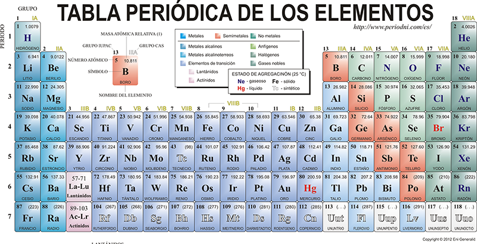

Plomo
Elemento de baja fusion, densidad media
mineral, procesado, edulcorante
20 Dolares
|  | Tienda de elementos |
|
Plomo Elemento de baja fusion, densidad media mineral, procesado, edulcorante 20 Dolares |
El plomo es un metal pesado, tóxico, de color gris azulado y con propiedades que lo hacen fácilmente maleable y denso. Se encuentra en la tabla periódica con el símbolo Pb y el número atómico 82. Debido a su densidad y otras características, ha sido utilizado en una variedad de aplicaciones industriales, aunque su uso ha disminuido debido a sus efectos tóxicos para la salud.
| Regresar |
|---|